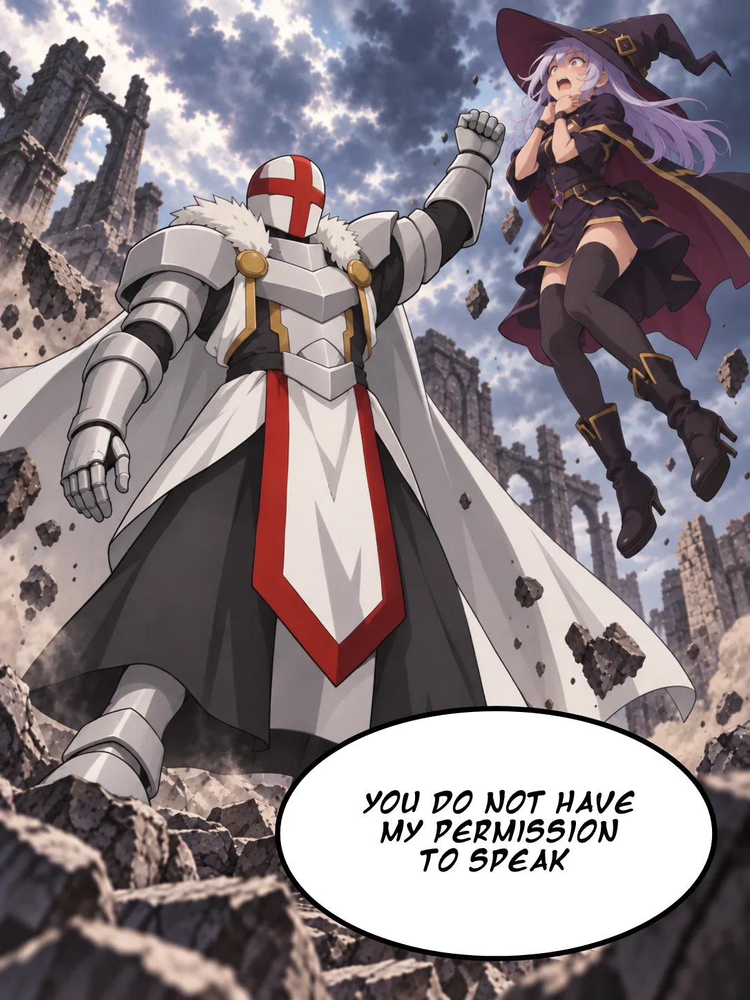
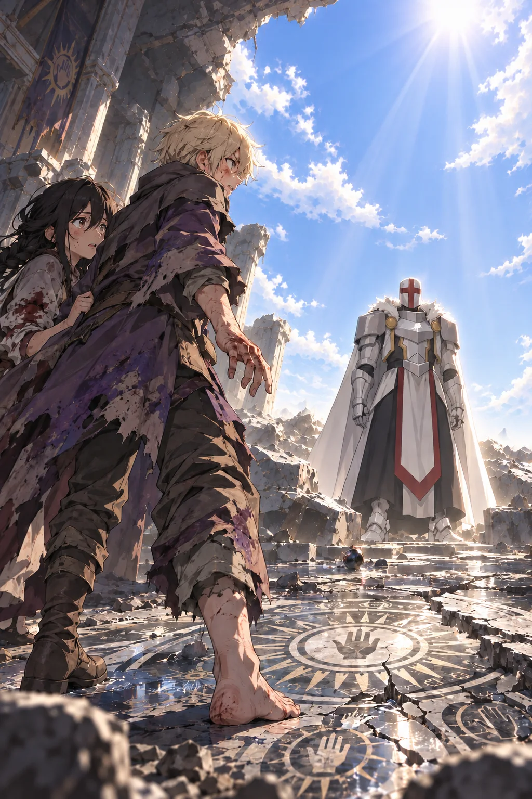

Volume One · Chapter Two
The White Mage
Orin could not see the man’s eyes.
The last chains of light dissolved around him, drifting upward in fragments that faded before they reached the broken ceiling. Radiance still poured through the chamber. It ran along the cracks in the floor, outlined every piece of falling dust, and burned against the smooth metal of the stranger’s helmet.
A red cross divided that featureless face.
There were no openings in the metal. No visor. No narrow slit through which a man might look.
Still, Orin knew the stranger was staring at him.
The certainty pinned him more effectively than the ice around his ankle had.
Beside him, Kisaya shifted one foot back. Loose stone scraped beneath her heel.
The helmet turned toward her.
She stopped.
The man stood upon the remains of the platform as if the chamber had been waiting to raise him there. White armor covered his torso, with broad pauldrons at his shoulders, gauntlets over his hands, and greaves along his shins, though its style resembled nothing worn by the Wardens of Veyr. A thick, fur-lined mantle circled his neck. Beneath the metal hung layered cloth, dark at its center and white along the sides, with a narrow strip of red running down the front. A long white cape fell behind him without stirring.
Not a single piece of dust clung to it.
Orin became aware of every miserable detail of his own appearance. The missing boot. The purple dye dried across his torn coat. Blood on his knuckles. He had never felt less prepared to meet someone who had just emerged from an ancient prison.
The man stepped down.
Stone cracked beneath his armored foot.
Kisaya raised the rock she still held.
Orin caught her wrist.
The stranger regarded the small, jagged weapon. When he spoke, his voice was low, clear, and untouched by the violence of his awakening.
“You are no threat.”
Kisaya’s brown eyes narrowed.
The words offered no reassurance. He had merely judged them incapable of hurting him.
“Which of you broke the seal?”
Neither child answered.
Kisaya lowered the rock by an inch. “The floor collapsed.”
“That is not what I asked.”
“We did,” Orin said. “We didn’t mean to.”
The red cross turned toward him.
“Intent does not alter the result. You released me.”
The man looked from Orin to Kisaya once more.
“A debt is owed.”
The light continued to recede. Darkness returned first to the high edges of the chamber, then crept down the walls toward the shattered spell circle. Above, shapes moved among the broken stones.
The Wardens had not fled.
The bearded fire mage appeared at the edge of the hole. His expression was hidden by shadow, but the flame in his palm shook.
“Away from him,” he ordered.
Orin almost obeyed.
Years of habit pulled at him harder than sense. A City Warden had given an order. The words had the familiar weight of bells, laws, and silver chains. For one instant, Orin’s body remembered a world in which doing as he was told might make everything safe.
Then he remembered the woman screaming inside the burning tenement.
He stayed beside Kisaya.
The narrow ice mage descended first. He slid along a path of frost that formed beneath his boots, its upper end anchored to the broken ledge. He landed inside the chamber with both hands raised and his lips already moving through a spell.
The witch came next, lowered by a coil of wind. Dust spiraled around her boots. A cut above her eyebrow had painted one side of her face red, and the three feathers at her collar were bent.
The bearded Warden climbed down last.
What Orin had taken for a baton came off the man’s back as his boots touched the floor. He twisted its grip. Seven nested lengths of ashwood slid apart between the iron bands, extending into a staff taller than the Warden’s shoulder. Each band bore a different elemental mark.
The three mages spread out.
They no longer seemed interested in the children.
Orin’s shoulders refused to loosen. All three had shifted their attention to something standing between him and the only exit.
The stranger turned away from Orin and Kisaya. His helmet passed over the witch, the ice mage, and the Warden. He took in their black robes. Their spell marks. The fire, wind, and frost gathering around them.
One armored hand tightened, and his helmet angled by a fraction. It was the first sign that anything in the chamber was familiar to him.
“Black,” he said.
The word fell softly.
The witch heard an accusation in it. Her wind sharpened, carving pale rings through the dust.
“You know what we are, relic?”
The man did not answer her. He looked around the chamber instead.
His gaze lingered on the slab that had crushed the outer rings of the seal. Then on the walls, where hammers had scarred every open hand and many-rayed sun. At last, he looked up through the ragged wound in the ceiling.
A square of blue afternoon sky waited there.
“Where is the eastern tower?” he asked.
No one answered.
He walked to the broken edge of the platform. His movements were measured, but not stiff. The armor made almost no sound.
“There were seven towers above this hall,” he said. “The eastern stood higher than the rest. Where is it?”
The narrow mage glanced at the Warden.
The Warden’s grip shifted on his staff. “There are no towers. Not here.”
The red cross faced him.
“Name this city.”
“You are beneath the southern ruins of Veyr.”
Silence followed.
Orin heard a pebble fall somewhere beyond the light.
“Veyr,” the stranger repeated, giving the name a broader first vowel than anyone Orin knew. “The court tongue survived, though your pronunciation has wandered.”
“What kingdom claims it?”
The Warden’s fear loosened slightly. Confusion had given him something to stand on. “Veyr belongs to no king.”
“Then to whom?”
“The city is governed by the Conclave under Archmage Solmir.”
“I know neither.”
The witch laughed.
It was too loud. Too sharp. The sound of someone who needed everyone else to believe she was not afraid.
“Of course you don’t. Did you crawl into that costume after drinking yourself senseless? Is that it?” Her gaze ran over the white armor. “You found an old cellar, dressed yourself as a corpse, and frightened two children?”
The man ignored her.
“What year?”
The Warden did not respond at once.
The man took one more step.
The remaining light bent toward him.
“What year is recorded?”
“Four hundred and twelve,” the ice mage said.
The Warden shot him a furious look.
The stranger faced the narrow man. “Counted from what?”
“From the Liberation.”
“Liberation.”
The word sounded different in his voice. Emptied of celebration.
Orin knew the date as easily as he knew his own name. Year Four Hundred Twelve of the Liberated Age. Every official document carried it. Every schoolroom displayed the number beneath an image of the first black archmages breaking the chains of white rule.
The stranger looked at the ruined symbols around him.
His gloved fingers slowly closed.
“From whom?”
No one seemed willing to answer.
Kisaya did.
“The white mages.”
Orin looked at her.
She had lowered her rock, but not because she felt safe. Her attention had fixed on the stranger with the terrible focus she usually reserved for a lie she was about to pull apart.
“They say the white mages ruled everything,” she continued. “They say black mages overthrew them.”
He faced her.
“They say?”
Kisaya swallowed. “That’s what we’re taught.”
The damaged circle gave a faint pulse beneath Orin’s bare foot.
The stranger looked away. A second pulse came and went before he spoke. His hidden face and straight shoulders surrendered no grief.
Yet Orin felt as though he had watched something inside the man fall a very long way.
“Four hundred and twelve,” he said.
The numbers were nearly soundless.
Then he lifted his head, and whatever had opened inside him was gone.
The bearded Warden saw the change too. He planted the foot of his staff against the floor.
“Enough. Whoever you are, this site is under the authority of the Veyr Conclave. You will surrender yourself and submit to examination.”
The man looked at the staff.
“Authority.”
“That word survived,” he said. “How unfortunate.”
Fire climbed the iron bands.
“Name yourself.”
The stranger stood amid the broken seal, framed by the remains of its radiance.
“I am a white mage.”
The ice mage’s breath caught.
The witch’s mouth twisted. “One of the old tyrants.”
Orin’s heart lurched.
The armor. The ancient circle. The pale light.
The open hand within the many-rayed sun.
He had already known. Some part of him had known the moment those white lines awoke beneath the floor. But knowledge could remain unreal until someone spoke it aloud.
White mage.
The tyrants of the old world. Schoolbooks showed them in spotless robes above kneeling crowds, hoarding cures while their servants chained anyone who studied the elements. Their magic had been weak, Orin’s teachers said. Their control had not.
One stood twenty paces away.
The bearded Warden did not laugh. His gaze moved from the white armor to the broken seal.
Unease narrowed the Warden’s eyes. He looked like a man watching a sealed instruction become real.
“You should have stayed buried,” the Warden said.
The red cross fixed on him. “You know what this place was.”
“The sealed brief I received with the recovery order said the masters of your order were more than healers.” Fire tightened around the iron bands of his staff. “It did not say one was still alive.”
The narrow mage raised his hands. Ice assembled between them in a spinning wheel. “If he is what he claims, it changes nothing. We defeated his kind once.”
The stranger considered him.
“You?”
“Our forebears.”
“Do not borrow the victories of better men. They sit poorly on you.”
The ice wheel trembled.
The bearded Warden struck his staff against the floor again. “Your name.”
This time, the stranger answered.
“Grand White Mage.”
Pale lines appeared in the air behind him.
They did not form one of the circles Orin knew. There were no elemental marks, no hooked channels to gather power. The lines intersected in a vast, precise design, parts of it turning through one another without ever touching.
“Lord Ultimos.”
His title rolled through the chamber.
The broken circle answered.
Light stirred beneath every stone.
The witch looked from the glowing floor to the man who had named himself. Fear tightened the corners of her eyes. She drove it out with a sneer.
“Grand?” she said. “Lord?”
Ultimos did not look at her.
“You white-robed parasites always did love your titles. Grand. Lord. Pure.” Her voice climbed with every word. “You sat above kings, rationed mercy, and called obedience peace. Then black mages dragged you out of your palaces. Where was your lordship when they buried you here?”
Orin wished she would stop. Behind Ultimos, the pale lines had ceased their slow turning, as though the enormous design were waiting with him.
“Your whole age ended,” the witch said. “No one kneels to white robes now.”

Ultimos raised one fist.
The witch flew across the chamber.
There was no flash. No gust. Nothing struck her. One instant she stood beside the Warden, and the next her feet left the floor as her body hurtled toward the broken platform.
She stopped in front of Ultimos.
Her boots hung a handspan above the stone.
The wind around her collapsed. Both hands clawed at her throat. Her mouth opened, but the only sound that escaped was a thin scrape of breath.
Ultimos had not touched her.
His closed fist remained at his side.
“You do not have my permission to speak.”
He opened his hand.
The witch fell.
She struck one knee, caught herself, and sucked air into her lungs. For a heartbeat, Orin thought fear might overcome anger.
Then she looked up.
Humiliation won.
“Filthy—”
Wind detonated around her.
The blast tore dust from every surface. Orin threw an arm over his face as the air became a storm of grit and splintered stone. Kisaya slammed into him. They went down together behind a chunk of the broken platform.
Through the gale, the witch screamed a spell.
Three rings of compressed air formed above her. Each ring spun opposite the last, shrinking as it accelerated. Their edges sharpened until Orin could hear them cutting the stone beneath her boots.
It was no arresting spell.
It would pass through armor, flesh, and the wall behind both.
Ultimos turned away from her.
He faced the bearded Warden instead.
He did not seem eager to fight her. He seemed eager to finish asking questions.
Whether Ultimos cared about her hardly mattered while Orin and Kisaya remained trapped in the same chamber.
“Who ordered the seal maintained?” he asked.
The witch hurled her spell.
Ultimos extended his left hand behind him.
A white circle opened across his palm.
The light did not burst from it. Fine lines raced outward, crossed, and locked around a straight path through the chamber. Radiance filled the structure faster than Orin could follow, swallowing the wind.
The completed line burned brighter than noon. It began at Ultimos’s hand and widened as it crossed the distance, a roaring column of yellow-white radiance large enough to engulf a wagon.
The witch vanished inside it.
So did her spell.
So did the wall behind her.
The beam passed through stone without slowing. It tore a clean tunnel upward through the buried halls and erupted somewhere beyond the ruins in a burst of daylight. Air rushed after it. Loose rubble leaped from the floor and disappeared into the blazing passage.
Ultimos lowered his hand.
The radiance ended.
The witch was gone.
No ash marked where she had stood. No scorched outline stained the floor. There was simply an empty stretch of stone ending in a circular absence where the chamber wall had been.
Orin could see the sky through it.
A black feather drifted down.
It touched the edge of the destroyed floor and came apart into sparks.
Kisaya’s fingers dug into Orin’s arm.
He could not feel them.
His mind had fixed on the witch’s last expression. The rage. The pain. The moment the light reached her.
He had expected a scream.
There had not been time for one.
The narrow mage made a sound that did not become a word.
Ultimos looked at the hole his spell had made.
“Wasteful,” he said.
The ice mage attacked.
Frost exploded across the floor. It covered the distance in branching white veins, climbed Ultimos’s greaves, and sealed both feet to the platform. At the same time, the wheel between the mage’s hands split into twelve curved blades.
They launched from different angles.
Ultimos watched them come.
The first blade struck his shoulder and shattered. The second broke against his chest. Two crossed behind his knees. Three hit his helmet at once.
Ice burst around him in a glittering cloud.
The remaining blades curved in midair and came back.
Orin had seen academy demonstrations of guided ice, but never like this. The mage controlled every shard independently. He altered their paths with tiny movements of his fingers, bouncing them off pillars and broken slabs until the entire chamber became a cage of flashing edges.
The blades turned together and converged.
Ultimos lifted one hand.
Every blade stopped an arm’s length from him. Their curved edges softened, then separated into white granules that rained harmlessly over the platform. At the same instant, the frost binding his feet became clear water.
He stepped through the falling ice.
“The twelvefold pursuit,” he said.
The ice mage’s face went slack. “You know it?”
“Many blacks have tried defeating me with it before. They shaped it with greater discipline.”
The narrow mage’s shock hardened into panic. At the Warden’s shout, he pressed both palms to his chest. Frost armored him in towering plates, sealed a horned mask over his face, and lengthened one arm into a jagged spear.
He charged. The spear struck Ultimos’s chest hard enough to shake dust from the ceiling.
Ultimos slid back one pace and looked down at the point against his armor.
“A body wrapped in power it cannot sustain,” he said. “You have mistaken size for strength.”
His hand settled against the spear. Every plate collapsed inward. The towering shoulders folded, the mask tightened, and cracks raced through the structure as it compressed around its caster.
The narrow mage screamed.
“You cannot release it,” he said. “You built no separation into the binding.”
The man’s eyes showed through the fracturing mask. “Help me.”
Orin’s stomach twisted.
Ultimos had done this to him. With a touch, he had turned the mage’s defense into a closing fist.
“Please,” the man gasped.
Ultimos regarded him while the ice tightened. “You entered my hall wearing black and threatened those who freed me. I find no error to correct.”
He tapped one finger against the spear.
The armor imploded.
There was a sound like a lake freezing in a single breath. The great shape collapsed to a point of blue-white light.
Then the light went out.
The narrow mage was gone.
Water splashed across the platform.
The plea repeated inside Orin’s head. Ultimos had time to understand it, answer it, and choose. Orin’s hands began to shake.
The water ran between the broken lines of the seal and gathered in shallow pools.
Orin stared at his reflection in one of them. A pale, terrified face. Dust-white hair. Blue eyes too wide to belong to him.
His eyes kept returning to Ultimos no matter where he tried to put them.
The blue star above the Warden’s staff flared.
“Now!”
The Warden drove the staff forward.
Fire crossed the chamber in a solid stream, white at its center and wrapped in blue. It struck Ultimos and twisted into a roaring vortex. Stone softened. Water became steam. Orin dragged Kisaya down behind the slab as the air scorched his lungs.
Then a white hand reached through the fire.
Ultimos walked out. Every flame that touched his armor divided and lost its shape, the vortex unraveling behind his unmarked cape. The Warden retreated with every step he advanced.
“What happened to the Order?” Ultimos asked.
The Warden’s eyes flicked toward the tunnel the first beam had made.
“Which order?”
Ultimos stopped.
The flames in the chamber dimmed.
“Choose your next answer carefully.”
The Warden shifted his staff into both hands. “There are no white orders.”
“Where did they go?”
“Where defeated tyrants belong.”
Ultimos’s helmet revealed nothing.
His voice became quieter.
“How many survived?”
The Warden did not answer.
“How many?”
“None.”
The word passed through the chamber with no more force than a breath.
The answer silenced Ultimos.
The Warden watched him, and something changed in the bearded man’s face. He had found the wound beneath the armor.
He smiled.
“That is what your precious order became,” he said. “Ash under our cities. Names scratched out of books. A few bloodless healers performing parlor tricks for copper.”
Kisaya rose behind the broken slab.
“Shut up,” she said.
The Warden barely looked at her.
“Four hundred years,” he continued, his eyes fixed on Ultimos. “And the world did not miss you.”
The white mage said nothing.
Orin remembered the way Kisaya smiled at fear.
The Warden was doing the same thing now.
He was provoking Ultimos because anger was the only weapon he had left.
It was working, though the Warden misunderstood the result.
The lines on Ultimos’s armor had begun to glow.
Very slowly, the Warden lifted his staff.
Fire gathered at its head.
Ultimos watched him.
The first ring formed wide and red. A second appeared within it, burning orange. Then a third, smaller and white. Each turned in a different direction. Runes spread from the Warden’s boots, covering the wet floor in black light.
The spell grew until the heat forced Kisaya back down.
Orin understood the shape of it.
Every visible line aimed at Ultimos.
The Warden meant to pour everything he had into one final attack.
Ultimos seemed indifferent.
“Your age is over,” the Warden said.
“So you have told me.”
The fourth ring opened.
“Die with it.”
The Warden released the spell.
At the last instant, he twisted the staff.
The rings turned.
The fire did not fly toward Ultimos.
It came toward the children.
Orin saw the deception too late. The black runes on the floor were not feeding the spell. They were a second channel, hidden beneath the light of the first. The Warden had shown Ultimos one target while binding another.
Kisaya stood between Orin and the flames.
She had no time to move.
Orin caught her jacket and tried to pull her down.
The world turned white.
A curved barrier appeared around them.
It was light built into the temporary shape of a wall, thin enough to see through and no thicker than a soap bubble. The same impossible geometry as the ancient seal held its surface together. The fire struck.
The chamber vanished behind flame.
Orin felt no heat.
Not a breath of it.
The barrier did not shake. It did not bend. The inferno divided against its surface and flowed around the children, burning trenches into the stone on either side. Black runes struck the pale geometry and disappeared.
Kisaya stared through the light.
Ultimos had not turned toward them.
One hand was open at his side.
That was all.
The Warden’s spell exhausted itself. Flame streamed away into smoke. The barrier faded, leaving Orin and Kisaya untouched at the center of a blackened circle.
Without the silent movement of Ultimos’s hand, they would have died before either of them could reach the floor.
Kisaya found her voice first.
“Thank you.”
Ultimos looked over one armored shoulder.
“I owed you a debt,” he said. “It is repaid.”
His hand closed.
The Warden’s staff tore free.
It crossed the chamber so quickly that the man’s palms split against its iron bands. Ultimos caught the weapon without looking.
The Warden clutched his bleeding hands and stared.
“You left your staff unguarded,” Ultimos said. “White magic can move anything carrying active magic unless it is warded or anchored. Your witch found out the hard way.”
He turned the captured staff once, examining the engraved sections.
Then he squeezed.
The ashwood did not splinter. The iron did not bend. Staff and bands compressed together into a smooth black sphere the size of a plum.
Ultimos let it fall.
It struck the floor with a small, heavy sound. Thin cracks spread beneath the sphere; none of the staff’s weight had vanished with its size.
The Warden ran.
He made it two steps.
Pale lines erupted beneath his boots. They climbed his legs and crossed around his chest, hardening into chains of light. More wrapped his wrists and dragged both arms wide.
Each link closed into the next before fastening itself to the ancient circle beneath him.
He hit his knees.
A clasp snapped inside the torn fold of his coat. Something pale slipped free.
It struck the stone with a sharp click, rolled across the ruined circle, and fell flat near one of the broken rings. The many-rayed sun flashed across its milk-white face.
The disk.
Orin’s breath caught. Kisaya’s hand closed around his wrist.
The Warden saw it too. One bloodied hand clawed toward the disk before the chains dragged his arm away.
Ultimos’s helmet followed the movement of that hand. The red cross passed over the milk-white stone, then returned to the prisoner without pause.
The chains pulled him flat against the center of the ruined circle.
They were the same kind that had bound Ultimos.
Only smaller.
The Warden struggled until his face turned red. Fire flashed around his hands and vanished wherever it touched the pale links.
Ultimos approached him.
Each footstep rang against the stone.
Kisaya pressed two fingers against Orin’s wrist, then pointed toward the disk. It lay several paces beyond the shelter of the broken slab, with Ultimos standing between them and it.
We need it, she mouthed.
Orin shook his head. They did not know what the disk was or what touching it might do.
Kisaya glanced at the Warden, then back at him.
They killed for it.
“You will tell me where the Conclave keeps the records of the Liberation,” he said. “You will name every other Meridian temple whose seal the Conclave maintains, and every surviving school that claims the white art.”
The Warden spat at his feet.
The spittle stopped before it touched the white armor. It hung in the air for an instant, then fell straight down.
Ultimos did not react.
“Answer,” he said, “or I will separate your body into its smallest living forms and permit each of them to discover how long death can take.”
Orin’s blood went cold.
The Warden heard no empty threat either. His eyes moved across Ultimos’s armor, searching for a face and finding only the red cross.
“The Conclave archive is beneath the Black Spire,” he said.
Ultimos waited.
“And the other temples?”
“I don’t know.”
The chains drew tighter.
“My recovery order covered the artifact and this site,” the Warden said through his teeth. “Its purpose and the other sealed records are restricted above my rank.”
“And the white schools?”
The Warden’s fear hardened into hatred. “Outlawed. What remains hides in cellars and poorhouses, performing weak tricks for copper.”
“Schools.”
“There are none.”
“Who ordered their destruction?”
“Men dead for four centuries.”
“Names.”
“Heroes.”
The chain around his chest tightened.
The Warden coughed. “You think this changes anything? You think walking out of a grave makes you a lord again?”
Ultimos stopped an arm’s length away.
“No,” he said. “Power made me a lord. Walking out merely allows me to correct those who forgot.”
The Warden laughed.
The sound broke twice in his throat, but he forced it out.
“There it is. The old white arrogance. We teach children about men like you.”
“What do you teach them?”
“That you hoarded healing while people died. That you chained black mages and called it peace. That you starved cities to feed your sanctums.”
Ultimos leaned closer.
“Did I?”
The Warden’s laughter stopped.
“Did you see it?” Ultimos asked.
“The record—”
“Did you see it?”
“Everyone knows what your kind did.”
“Everyone.”
Ultimos straightened.
Four centuries of silence seemed to gather around that word.
The Warden pulled against the chains again. “You lost. That is the only record that matters.”
“You mistake survival for truth.”
“And you mistake power for innocence.”
The words struck the chamber harder than any spell.
Ultimos went still.
Orin watched the white mage’s hand hang loose at his side. Ultimos spoke in the same level voice he had used before, and that frightened Orin most.
“Give me the names,” Ultimos said.
“I’m done talking to a filthy white—”
A spell circle opened beneath him.
It was larger than the platform.
Hundreds of pale lines spread across the floor in an instant, passing beneath rubble and pools of water without interruption. Rings turned within rings. The open hand appeared at their center, surrounded by a sun with more rays than Orin could count.
One of the outer rings ignited beneath the disk.
The pale stone shuddered. Then it began to slide toward the circle’s center.
Kisaya ran.
“Kisaya!”
Orin lunged after her and caught only the loose edge of her jacket. It tore from his fingers. She crossed one blazing line, dropped to a knee, and closed her hand around the disk.
The center of the spell circle turned white.
Orin caught her outstretched arm and pulled. They fell together behind the broken slab.
The Warden looked down.
His last word became a scream.
Light rose from the circle in vertical lines. They crossed above the Warden, closed around him, and filled until no gaps remained.
The constructed pillar stood perfectly straight and so bright that Orin saw the bones of his own fingers through the hand covering his face. It drove upward through the chamber ceiling, through the buried ruins, and into the sky.
For one terrible heartbeat, the Warden’s silhouette remained inside it.
Then the shape came apart.
Not burned.
Not crushed.
Erased.
The pillar narrowed to a shining thread and disappeared.
The spell circle faded with it.
Silence returned.
Three people had entered the chamber.
Nothing recognizable remained of any of them.
Ultimos stood at the center of the destruction. A round opening showed the sky above his head. Afternoon light fell across his white armor and the blackened stone around it.
He looked down at the chains that had held the Warden.
They dissolved.
Kisaya opened her fist. The disk rested against her palm, its pale surface completely unmarred. She slipped it inside her jacket as the last lines of Ultimos’s circle faded beneath her knees.
Orin could hear his own breathing. Kisaya’s too. Quick, shallow breaths that neither of them could control.
The white mage turned.
Orin moved before he thought.
He stepped in front of Kisaya.
His bare foot landed in broken stone. Pain shot up his leg, but he did not move aside. He had no spell. No weapon. No reasonable belief that his body could stop anything he had just witnessed.
Still, he stood there.

Ultimos approached.
He stopped several paces away.
The featureless helmet tilted down toward them. Orin felt the unseen eyes pass over Kisaya’s bleeding arm, the bruise at her temple, his missing boot, the burns along his coat.
“Report your injuries,” Ultimos said.
Neither child answered.
Orin had grown up learning that white magic closed wounds.
He had watched it unmake three people and leave nothing to bury.
The Grand White Mage waited among the empty places where their pursuers had stood.
Orin tried to answer, but his mouth had gone too dry.